Keep your Mac fast, clean and safe.
Sentinel lives in your menu bar. It finds apps you are not using, cleans old caches, removes apps with all their data, and warns you about hidden programs such as crypto miners. Free and open source.
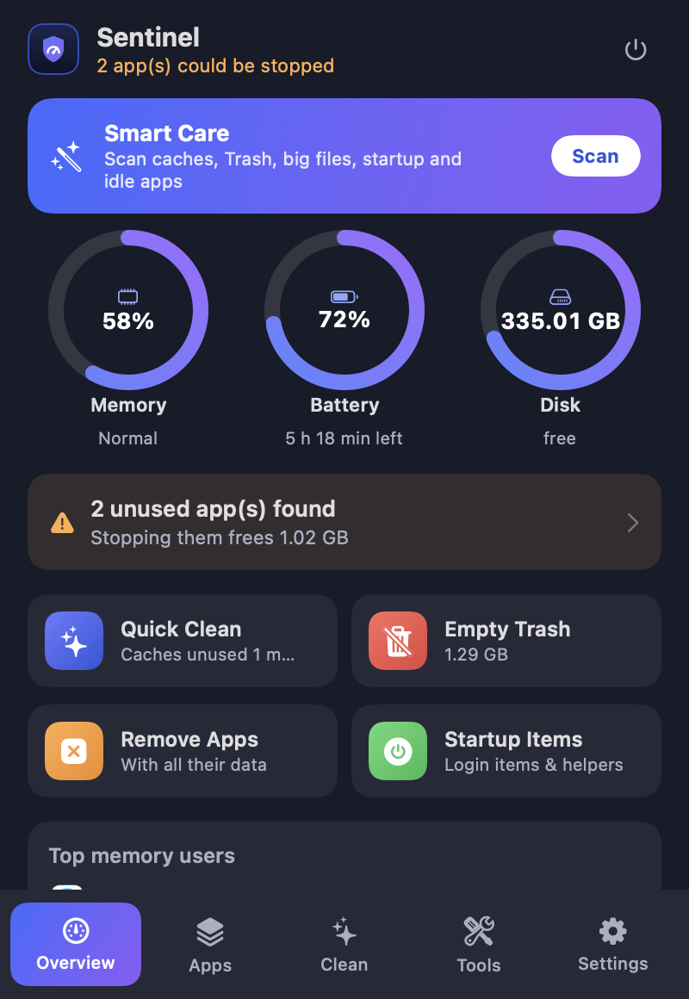
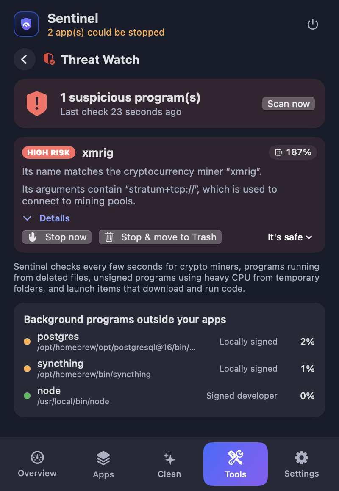
Everything in one small menu
Powerful tools, but nothing happens until you have seen the list and said yes. Everything goes to the Trash and can be restored.
Live monitor
Memory, battery and disk rings, plus the apps using the most memory.
Idle app detection
A popup tells you which background apps are unused, why, and lets you quit them.
Cache cleaner
Find caches untouched for a week up to a year. Review the report, then clean.
Smart Care
One scan for caches, Trash, big files, startup items and idle apps.
Uninstaller
Remove an app together with its caches, preferences and containers.
Duplicate finder
Compares real file contents, keeps one copy, trashes the rest.
Space Lens & big files
See what fills your disk and find large files you forgot.
Startup Manager
Login items and helpers. Flags broken leftovers and suspicious ones.
Threat Watch
Spots crypto miners and hidden background programs, and stops them in one click.
Maintenance
Restart Dock or Finder, fix "Open With", reset Quick Look, flush DNS.
History & Restore
A log of everything cleaned, with one-click restore from the Trash.
Light & dark
Native look, smooth animations, light on memory and CPU.
See it in action
Screens shown with sample data. Scroll sideways for more.
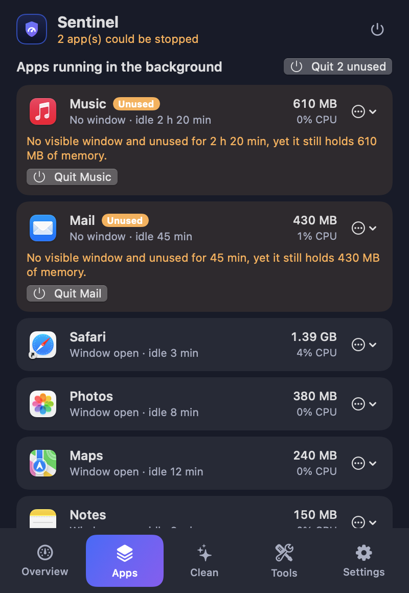
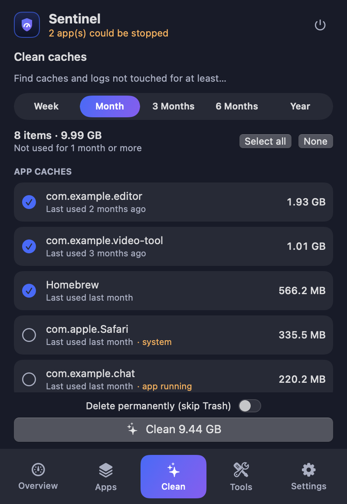
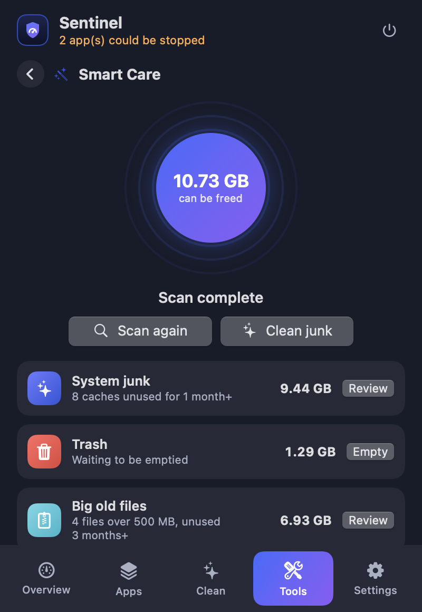
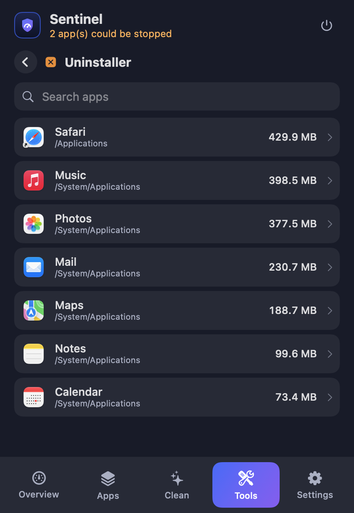
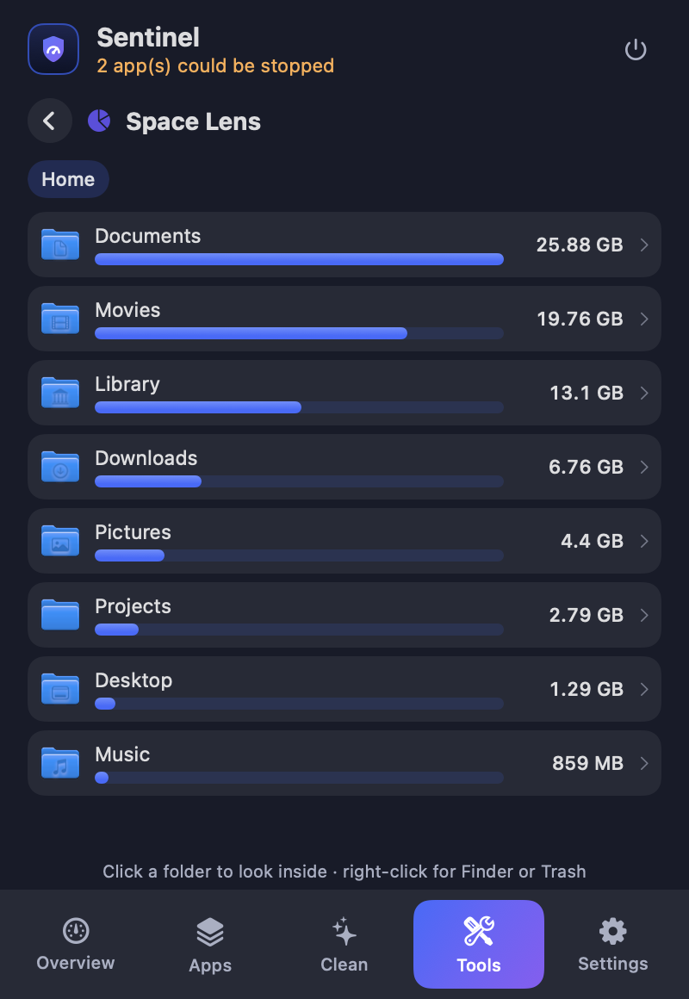
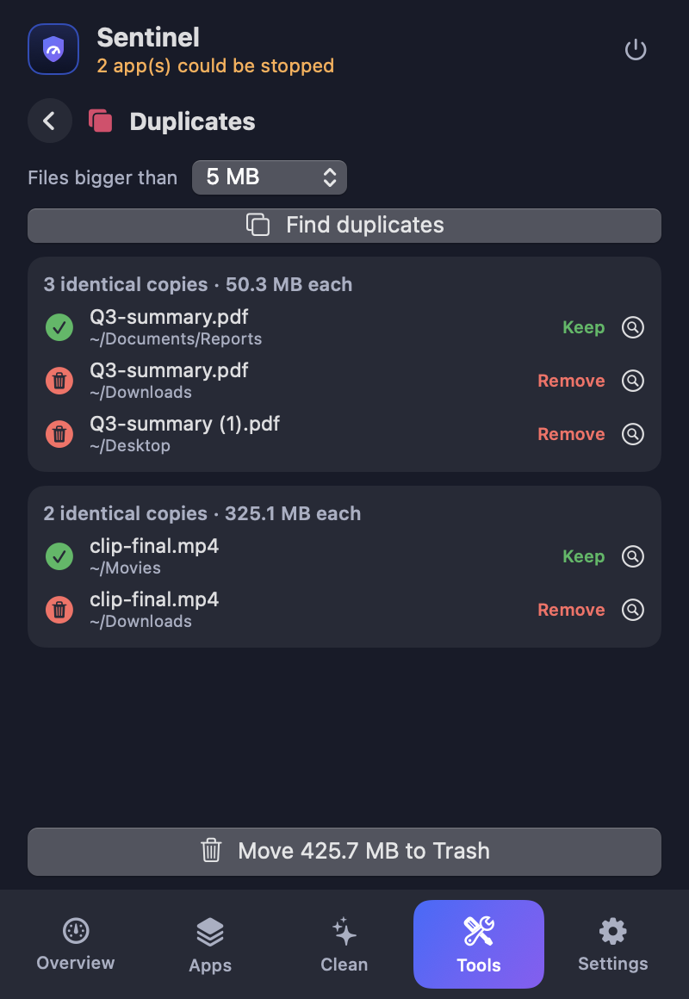
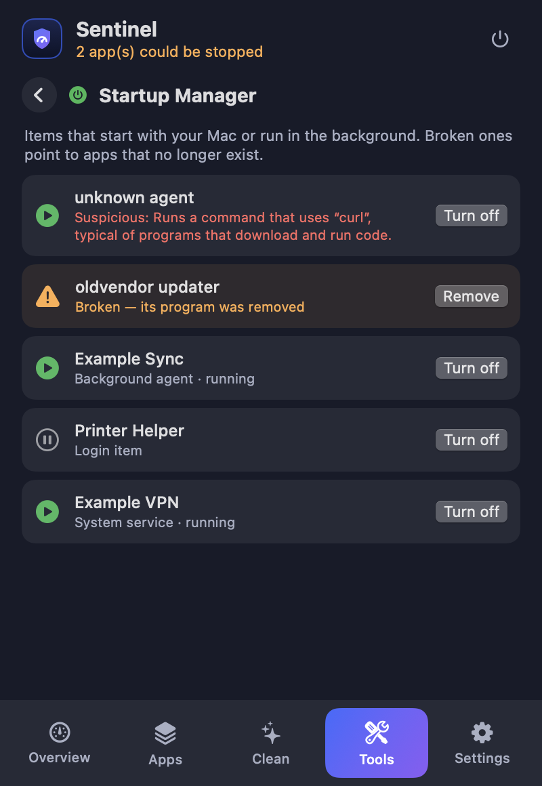
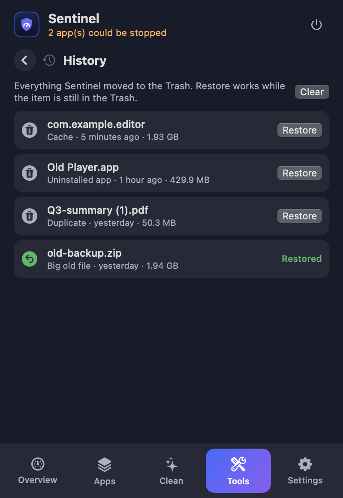
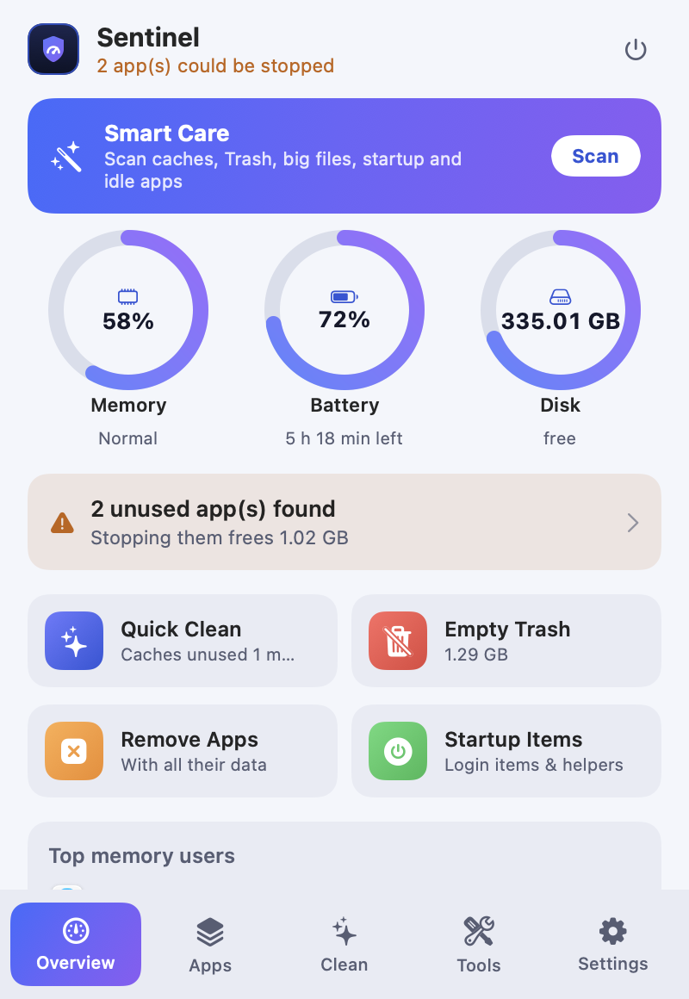
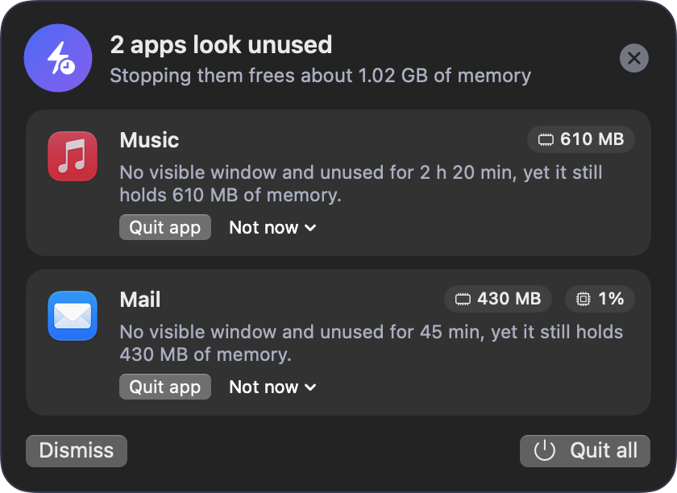
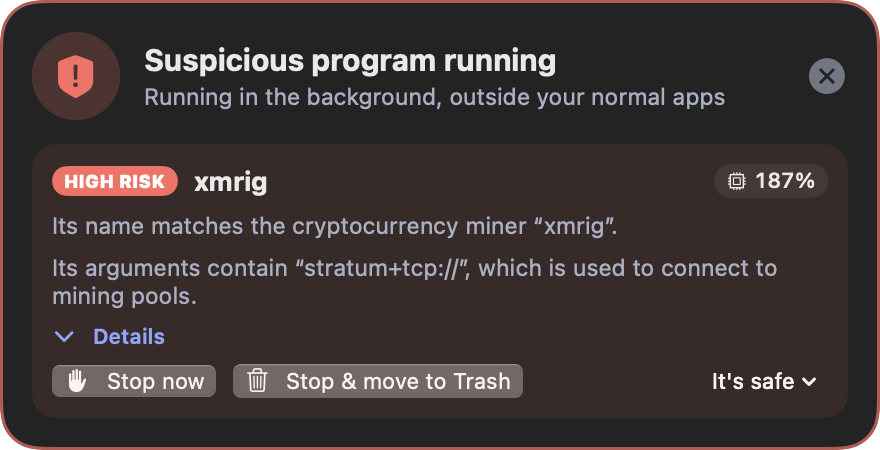
Install
Sentinel is built from source, so you know exactly what runs on your Mac. You need macOS 14+ and Xcode 15+ (or the Swift toolchain).
- Clone and build
git clone https://github.com/alfayedoficial/sentinel-mac.git cd sentinel-mac ./build.sh - Open it
A small icon with your memory percentage appears in the menu bar.open ~/Applications/Sentinel.app - Allow it once (optional)
In System Settings → Login Items & Extensions switch on Sentinel, so it can switch off system launch items without asking for your password each time, and tick Open Sentinel at login in its Settings.
Privacy and safety
Nothing leaves your Mac
No network connections, accounts, analytics or telemetry. History stays in a local file.
Review, then confirm
Every clean-up shows a list first. Items go to the Trash and can be restored from History.
A tiny, locked-down helper
The optional root helper can only switch off third-party launch items in two folders. It refuses Apple items and path tricks, and it never deletes.
Open source
MIT licensed. Read every line, change it, share it.
Contribute
Fix a typo, add a tool, write a detection rule or translate the app. There is a step-by-step guide, tests, and issues labelled good first issue.
| I want to… | Start here |
|---|---|
| Build and run the project | Development guide |
| Understand how it works | Architecture |
| Add a feature or a rule | Contributing and the roadmap |
| Change the look | Design system |
| Report a bug or a false alarm | Open an issue |